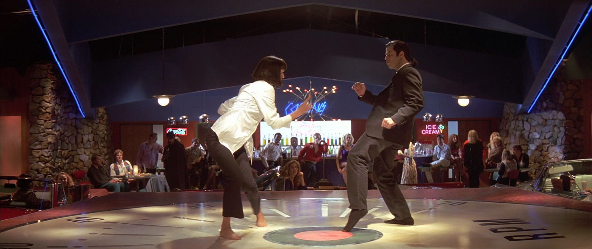
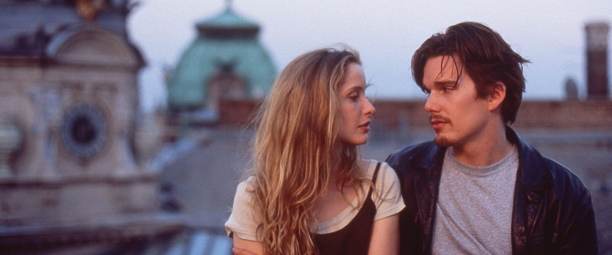

The Godfather, 40’lar ve 50’lerin Amerika’sında, bir İtalyan mafya ailesinin destansı öyküsünü konu alıyor. Don Corleone’nin kızı Connie’nin düğününde, ailenin en küçük oğlu ve bir savaş gazisi olan Michael babasıyla barışır. Bir suikast girişimi, Don’u artık işleri yönetemeyecek duruma düşürünce, ailenin başına Michael ve ağabeyi Sonny geçer. Danışmanları Tom Hagen’in de yardımlarıyla diğer ailelere savaş açan Corleone ailesi, eski moda yöntemleri de değiştirmeye başlar.
Mario Puzo’nun çok satan kitabından Puzo ve yönetmen Francis Ford Coppola tarafından sinemaya uyarlanan film o yıl En İyi Film, En İyi Erkek Oyuncu ve En İyi Uyarlama Senaryo dallarında Oscar kazanmıştır. Yapılan araştırmalar sonucu Türkiye'de en fazla izlenen ve satılan film olma özelliği de taşır.

Predestination filmi kendi içinde birden fazla kişilik taşımayı ve kendi ruh eşinin yine kişinin kendisi olduğu fikrine kaptıran bir filmdir.Filmi ilk izlediğinizde bitince yarım saat boş boş tavana bakmanız muhtemeldir.
2014 Avustralya yapımı bilimkurgu filmidir. Film Michael ve Peter Spierig kardeşler tarafından yazılıp, yönetilmiştir. Robert A. Heinlein'ın kısa hikâyesi '—All You Zombies—'ten uyarlanmıştır. Filmin başrollerinde Ethan Hawke, Sarah Snook ve Noah Taylor var.

Bir yaşanan gerçek vardır, bir de yaşananın ötesinde olan gerçeklik... Biri rüya, diğeri ise Matrix! Neo,son derece tehlikeli bir adam olan Morpheus’un gerçeği bildiğine inanmaktadır. Bir gece Neo, kendisini başka bir dünyaya götürebilecek güzel yabancı Trinity ile tanışır. Bu kızın götüreceği dünyada, Neo Morpheus’u bulacak ve Matrix hakkında bir şeyler öğrenecektir. Neo, Tam olarak kavrayamadığı şeylerin yaşamını kontrol ettiğini biliyor.. Nedir bu Matrix?

Pulp Fiction(Ucuz Roman), Quentin Tarantino yönetmenliğindeki Roger Avary ile birlikte yazılmış, 1994 yapımı, kült kabul edilen bir filmdir. Ucuz Roman, En İyi Film dahil 7 dalda Oscar'a aday gösterilmiş ve En İyi Orijinal Senaryo Oscarı'nı almıştır.
Ucuz Roman'da Honey Bunny ve Pumpkin, hayatlarına biraz hareket katmak isteyen genç ve birbirine aşık bir çift küçük soyguncudur. Öteyandan, iki gangster olan, Vincent Vega ve Jules, günlük işlerinden biri olarak, patronlarına ödemeyi geciktiren bir kaç sahetekar genci vurmaya giderler. Vincent patronun güzel ve genç karısına bebek bakıcılığı yapmakla da görevlendirilirken ortağı suç yaşamına son vermeye karar verir. Cesur bir boksör ise para karşılığı hile yapmayı reddederek şehirden kaçar. Kader bu aykırı tipleri muhteşem bir şekilde bir araya getirecek, yollarını kesiştirecektir.